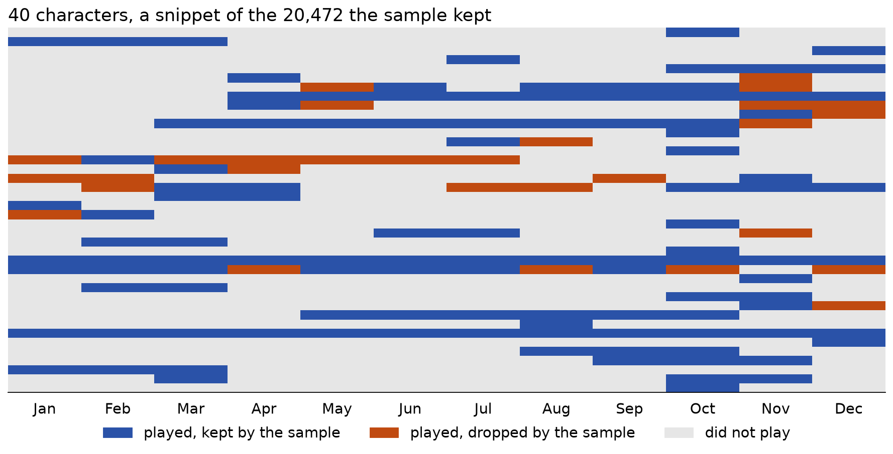

def load(file_paths, fraction=0.1):
"""Parse the given raw ".txt" log files, then subsample by character."""
df = parse_files(file_paths)
if fraction == 1:
return df.lazy()
df = sample_by_user(df, fraction=fraction)
return df.lazy()Part 5 · Assembling the plan, and running it
1 From functions to a plan
Everything so far has been a function that takes a table and returns a table. A skrub Data Op is what turns those functions into a plan: a graph of nodes, each one either a step of the pre-processing or the estimator at the end, with the hyperparameters declared alongside so that they can be tuned together.
1.1 Loading and downsampling the file
Tip
Loading and downsampling the file (click to expand)
load parses the raw .txt heartbeat logs itself — parsing is a node of the plan, not a separate pre-processing script — then downsamples the result to reduce execution time. We need to be deliberate with how we sample the data: rather than choosing a random subset of the values in the dataset, we need to be careful to select a subset of characters and keep all the rows for those characters. This ensures that we have reliable information about all the characters.
Sampling by character rather than by row is not a detail. A row-level sample would punch holes in each character’s monthly timeline, and a character with a missing month looks exactly like a character who churned — the label would be corrupted by the sampling. Keeping every row of a smaller set of characters costs the same in compute and leaves the timelines intact.
1.2 Why the sample is drawn by character
load parses first and samples second, and the sampling is one line of polars: take the distinct char values, draw a fraction of them, keep every row whose char is in that set. The default fraction is 0.1, and --fraction 1 skips the sampling entirely. The draw is seeded (seed=42), so the same characters come back on every run — the model is not seeded, but the sample is.
The obvious alternative is to sample rows, and it is wrong here in a way that is easy to miss, because the table it produces looks perfectly reasonable. It has the same number of rows, the same columns, and no nulls. What it does not have is intact timelines.

A 10% sample of the rows, for 40 characters drawn at random from the 20,472 the sample kept. Blue: the sample kept the month. Orange: the character played that month, but the sample dropped it. Grey: the character did not play.
The orange blocks are the problem. Each one is a month the character demonstrably played, which the row sample threw away. Nothing about the character changed — only how the sample was drawn.
The damage is not marginal. On the 2008 table — 10.8M heartbeats, 37,354 characters, 98,972 character-months — a 10% row sample keeps 20,472 characters but loses 24% of the character-months those characters actually played. Of those characters, 13.9% end up with a hole in the middle of their timeline, 1.85 months wide on average. A character-level sample of the same size keeps 3,735 characters and loses nothing.
The holes matter because of how the label is built. has_played is derived from presence in the table, so a dropped month is indistinguishable from a month the character did not play. churn is “absent this month and the previous one”, so a dropped month can flip a row from negative to positive. Measured on the same 2008 data, 33% of the positives in the row-level sample are spurious — 5,519 of 16,701 — while no true positive is lost. The corruption is one-directional: it only invents churners, never hides them. Precision against the true labels is 0.67 and recall is 1.0.
That asymmetry is the reason the choice is not a matter of taste. A model trained on the row sample would be learning to predict the sampling pattern as much as the behaviour, and the pattern is not random with respect to the target: it fires exactly on the rows where a character played a little. The character-level sample costs the same to parse (the parse happens before the sample) and about the same to fit (1.08M rows against 1.12M), and it buys complete timelines for fewer characters instead of broken timelines for more.
The same load node runs on the held-out files, so the unseen evaluation samples 10% of the characters of the unseen window, not the characters chosen for training. That is deliberate: the held-out run should not be able to recognise which characters the model was fitted on.
1.3 The hyperparameters
The hyperparameters of the pipeline are declared with skrub’s choose_* functions. They fall into three groups, and the grouping is what decides how they can be searched:
- Feature-table choices change the arguments of
build_feature_table, so each distinct combination is a separate entry in the skrub cache and a full rebuild of the feature table: the session gap, the zone-session gap, how many lags and diffs to add, whether to use location features, the Gini coefficient, and whether to add the monthly and class-level blocks. - Structural choices only change what happens after the feature table is built, so a trial costs one refit per fold: whether to drop
charandmonth, the vectorizer’s cardinality threshold, its high-cardinality encoder, its null-drop fraction, and the regularisation of the linear model. - Capacity choices are the model’s own hyperparameters: the learning rate, the number of leaves, the minimum samples per leaf and the L2 penalty.
Mixing the first group into a model search would make most trials pay for a feature-table rebuild they do not need, so the search runs in stages: a coarse search over the feature choices on a 2% sample, then the structural choices with a logistic regression, then the capacity choices with the gradient-boosted model. make_data_op(stage=...) declares only the group a stage is meant to explore; frozen= carries the winner of one stage into the next.
Tip
Full Data Op construction script
def make_data_op(load_fraction=0.1, return_x=False):
raw_files = skrub.var("raw_files")
# Parsing the raw logs is a node of the plan like any other: the exact
# same code path parses whichever files the "raw_files" environment
# variable points to, whether that's the historical training set or a
# held-out, never-before-seen set of files.
historical_data = raw_files.skb.apply_func(load, fraction=load_fraction)
# In the original data, "guild == -1" means "no guild", so I'm replacing -1
# with nulls.
historical_data = historical_data.with_columns(
pl.when(pl.col("guild") == -1)
.then(None)
.otherwise(pl.col("guild"))
.alias("guild")
)
# Only score characters that played in the previous month: the others have
# no features to predict from.
user_month_has_played = historical_data.skb.apply_func(
build_churn_dataset, only_prev_active=True
).skb.set_name("query")
X = user_month_has_played["char", "month"].skb.mark_as_X(cv=Splitter())
y = user_month_has_played["churn_next"].skb.mark_as_y()
# Hyperparameters
session_gap = skrub.choose_from([30, 60, 15], name="session_gap")
use_location = skrub.choose_bool(name="location_features")
lags = skrub.choose_from(
{"no": None, "1": (1,), "1_2": (1, 2), "1_2_3": (1, 2, 3)}, name="lags"
)
# Built from the full historical data (a plain, non-X node), independent of
# the CV fold split of X, so lagged features always see each character's
# complete monthly timeline regardless of which fold is being evaluated.
feature_table = historical_data.collect().skb.apply_func(
build_feature_table,
session_gap=session_gap,
use_location=use_location,
# The Gini coefficient is off: measured against the pipeline's own
# time-based splitter it adds nothing over the rarity and zone-level
# columns, and it costs 1.4s of the 1.6s location block.
add_gini=False,
lags=lags,
_fingerprint=FEATURES_FINGERPRINT,
)
all_features = X.skb.apply_func(add_features, feature_table)
encoded = all_features.skb.apply(skrub.TableVectorizer())
data_op = encoded.skb.apply(
HGB(learning_rate=skrub.choose_float(0.1, 0.5, log=True)), y=y
).skb.with_scoring("roc_auc")
# data_op = encoded.skb.apply(DummyClassifier(), y=y) #.skb.with_scoring("roc_auc")
if return_x:
return data_op, X
return data_op1.4 The model and the encoder
The plan ends in a TableVectorizer followed by a HistGradientBoostingClassifier. The vectorizer is what makes the mixed table usable: it one-hot encodes the low-cardinality categorical columns (race, class, most frequent zone, guilds) and leaves the numeric and duration columns alone. The gradient-boosted tree model is a good fit for the rest — it handles nulls natively, needs no scaling, and picks up the non-linearities in features like level and session count without any manual binning.
The structural choices are searched with a logistic regression rather than the gradient-boosted model. That is a statistical choice, not a speed one: with the cache warm the feature table is free, so a trial costs 30 folds of vectorizer plus model fitting either way. A linear model has far fewer effective parameters, so the effect of dropping char or changing the cardinality threshold is readable from the results instead of being buried in the variance of a large tree ensemble. The linear branch needs a median imputer (the lag columns are null for a character’s first months) and skrub’s SquashingScaler, which is what tabular_pipeline uses for linear models.
char is exposed as a choice rather than dropped outright. It is an identifier, not a feature, and left in the model can memorise per-character behaviour that will not exist for a new character — but the search should show that rather than have it asserted.
The scoring function is roc_auc. Accuracy would be misleading here, because churn_next is true for only about 36.5% of the rows in the 2008 churn dataset (81,199 rows over 10 months), so a model that always predicts “not churned” already scores 0.64 accuracy while ranking nothing. AUC 0.5 is genuine chance, and that is the number to compare against.
1.5 Why only characters active in the previous month
The plan scores only characters that played in the previous month (only_prev_active=True). The alternative — keeping every row, including characters who were already absent — gives 221,237 rows in the 2008 data with 54.5% positives, against 81,199 rows and 36.5% positives for the restricted version.
The restricted version is not just smaller, it is easier to score well on. 75% of the old positive rows were already absent in the previous month, so the trivial rule “absent last month” gets ROC AUC 0.63 without any model at all. On the same test rows, a model trained on all rows scores 0.64 to 0.82 depending on the month, against 0.82 to 0.90 when trained on active rows only. The rows with no features do not make the problem easier — they pollute training. The cause is not tested here, but the direction is consistent across every month.
There is also an operational argument: you can only retain characters who are still around. Scoring characters who have already left produces a number that looks like a churn rate but cannot be acted on.
2 Running it
The data op is evaluated by passing a list of raw log file paths as input — parsing them is itself one of the plan’s nodes (see “Loading and downsampling the file” above). Here we cross-validate it on 10% of the characters of the historical (through October 2008) files:
data_op = make_data_op(load_fraction=0.1)
results = data_op.skb.cross_validate(environment=main.get_env("train"))
Note
Only characters that played in the previous month are scored (see only_prev_active=True above): the characters that were already absent have no features and are not the ones that could be retained, and keeping them in the training set lowers the scores on the characters that are still active.
3 Tuning
random_search wraps the plan in an Optuna study, persisted to wowah_churn_study.db so that a run can be resumed. Two settings matter more than the search space itself:
study_name. Without it skrub generates a fresh UUID per call, which is why the database accumulated six studies before this was fixed.- The search is sequential, and that is not a default to be raised. Parsing is a node of the plan and it spawns a process pool sized to the core count, so N parallel trials on a cold cache means N × cores processes. Measured at a 2% sample: 2 workers gave a 1.4× speedup and 4 gave 2.6×, but 8 drove a 24 GB machine into 40 GB of swap. The earlier
n_jobs=-1runs are the same failure in a different guise — 72 failed trials, every one withlocation_features=1, all dying within nine seconds of starting. timeoutis safe precisely because the search is sequential. skrub switches to Optuna’s threaded parallelisation only when a timeout is set andn_jobs > 1, and threads deadlock against the parser’s process pool. Note that a timeout counts wall-clock time, so a sleeping machine burns it;n_iteris the more predictable bound.
The search runs in three stages, each with its own study:
| Stage | Sample | Choices | Model | Trials | Cost/trial |
|---|---|---|---|---|---|
features |
2% | the eight feature-table choices | HGB, defaults | 40 | 145 s |
gaps |
10% | the three noisy feature choices, re-tested | logistic regression | 18 | 766 s |
structural |
10% | the six post-feature-table choices | logistic regression | 40 | 342 s |
capacity |
10% | the four model hyperparameters | HGB | 60 | 356 s |
The gaps stage exists because the Stage-1 ranking of session_gap, zone_session_gap and use_class_features was inside the noise of a 2% sample: the top ten trials spanned 0.852 to 0.860, and the gaps’ margins were 0.001 to 0.002. Freezing a noise-level winner would propagate that noise into every later stage, so those three are re-tested at 10% with the rest of the feature group frozen. It is the most expensive stage per trial, because each of the 18 combinations is a cold feature table, but it is also the smallest.
The winner of each stage is passed to the next through frozen=, so the later stages search a smaller space around a configuration that is already known to be reasonable. The final fit uses stage="none", which declares no choice at all: every knob takes the value found by the search, and the fitted plan contains no unresolved choice.
3.1 What the feature search found
40 trials at a 2% sample, mean ROC AUC over the 30 folds. The marginal effect of each choice, averaged over the trials that used it:
| Choice | Value | Mean AUC | Trials |
|---|---|---|---|
lags |
none | 0.8402 | 7 |
| 1 | 0.8553 | 6 | |
| 1–2 | 0.8535 | 8 | |
| 1–2–3 | 0.8569 | 19 | |
use_monthly_features |
on | 0.8551 | 28 |
| off | 0.8484 | 12 | |
location_features |
on | 0.8543 | 29 |
| off | 0.8499 | 11 | |
add_gini |
off | 0.8548 | 24 |
| on | 0.8518 | 5 | |
session_gap |
30 | 0.8503 | 9 |
| 45 | 0.8546 | 18 | |
| 60 | 0.8529 | 13 | |
use_class_features |
on | 0.8531 | 12 |
| off | 0.8531 | 28 |
Three things are worth reading off this table. Lags matter a lot — dropping them costs about 1.5 AUC points, the largest single effect in the search. The monthly per-character block and the location block both help, by about 0.7 and 0.4 points respectively. The Gini coefficient does not: it is the one feature block the search says to leave off, which matches the earlier measurement that it adds nothing over the rarity and zone-level columns while costing most of the location block’s runtime.
The class-level block is exactly neutral at this sample size, which is what a feature that is constant within a class-month should look like: it cannot separate characters that share a class. The gaps stage, run later at 10%, found a small positive effect (+0.0014), so it is kept.
One caveat on the sample. Zone rarity is log(N / n_v) over the characters in the sample, so at 2% it is computed over roughly 750 characters instead of 37,000. The location block is therefore noisier in the search than it will be in the final fit, which makes its 0.4-point advantage a lower bound rather than an estimate.
One caveat is worth stating plainly: the search runs on the same folds that are then reported, so the tuned score is optimistic. A clean comparison would need a third window that neither the search nor the final evaluation touches.
3.2 char is account age, not identity
The structural search turned up a result that looked wrong: dropping the char column cost 0.019 AUC, the largest single effect anywhere in the project. The obvious reading — the model memorises individual characters — is not what is happening, for two reasons.
First, char is an Int32, and TableVectorizer passes numeric columns through unchanged. The model sees a raw integer, not a one-hot identity, so it cannot look up “character 66560 churns less”.
Second, and this is the actual mechanism: character ids in this dataset are assigned sequentially at creation, so the id is a near-perfect proxy for account age. Spearman correlation between char and the character’s first observed month is 0.9986. And account age is a strong churn predictor:
| Tenure (months) | Churn rate |
|---|---|
| 1 | 0.671 |
| 2 | 0.362 |
| 3 | 0.278 |
| 6 | 0.243 |
| 12 | 0.186 |
first_month was never in the feature table — it is in add_lagged_features’s exclude_cols and was dropped before the vectorizer — so the model had no explicit age signal and read it off the id instead.
Adding tenure as an explicit feature confirms the diagnosis. With tenure present, on the same folds:
| Feature set | AUC |
|---|---|
char kept |
0.8716 |
char dropped |
0.8730 |
The 0.019 AUC that char appeared to carry was account age. Once tenure is explicit, the id adds nothing and dropping it is marginally better. That is the right outcome: an id is not a feature, and a model that leans on one is relying on an artefact of how the dataset was numbered.
3.3 What the later stages found
The gaps stage re-tested the three feature-table choices whose 2% ranking was inside the noise, on an exhaustive 18-cell grid at 10%:
| Choice | Marginal mean AUC |
|---|---|
session_gap |
30 = 0.8566 · 45 = 0.8576 · 60 = 0.8585 |
zone_session_gap |
same = 0.8582 · 30 = 0.8570 · 60 = 0.8579 |
use_class_features |
on = 0.8583 · off = 0.8569 |
The structural stage searched the post-feature-table choices with a logistic regression, and found two effects that matter:
| Choice | Effect |
|---|---|
drop_month |
keep 0.8556 · drop 0.8668 |
drop_char |
keep 0.8619 · drop 0.8664 |
high_cardinality |
string 0.8642 · minhash 0.8663 |
logreg_C |
correlation −0.840 with the score |
cardinality_threshold |
correlation −0.021 — no effect |
drop_null_fraction |
correlation +0.185 — weak |
drop_month is the largest: month expands to year/month/day/total_seconds, and total_seconds is a monotone time index, so the model was reading “which fold is this” off it.
The capacity stage then tuned HGB’s own hyperparameters:
| Choice | Best value | Correlation with score |
|---|---|---|
learning_rate |
0.0344 | −0.908 |
min_samples_leaf |
163 | +0.494 |
max_leaf_nodes |
54 | +0.412 |
l2_regularization |
0.0037 | +0.009 — no effect |
learning_rate dominates, and the best value sits at the bottom of the range the search was given (0.02–0.3), so the optimum is probably below it. The default of 0.1 was roughly three times too high.
Two choices turned out to be flat — cardinality_threshold and l2_regularization — and could be dropped from the space.
The next part looks at what the plan scores on data it has never seen, and at what it costs to run.